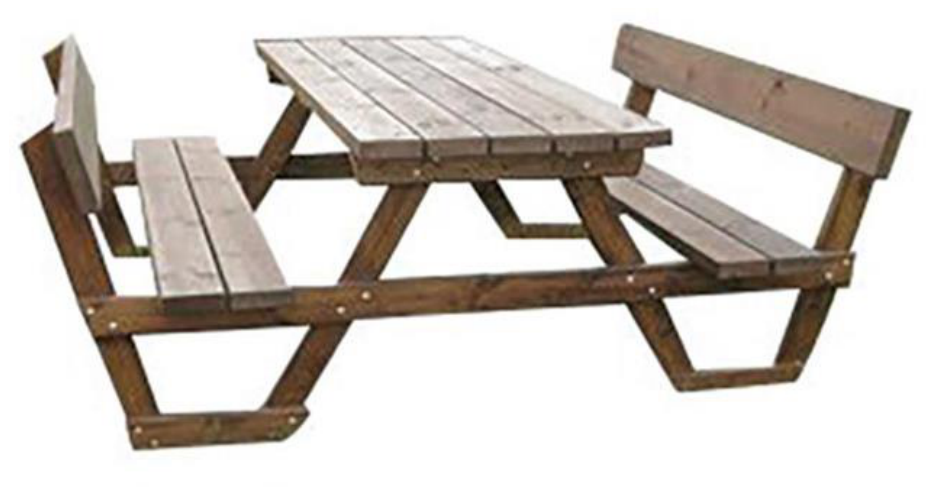

גאומטריה לכיתה ח'
18
בתמונה מוצג שולחן פיקניק (המושבים מקבילים לקרקע ולמשטח השולחן).

- א.סמנו זוג של זוויות מתחלפות בין מקבילים.
- ב.סמנו זוג של זוויות מתאימות בין מקבילים.
בסרטוט הנקודות B, E, C, F ממוקמות על ישר אחד. נתון: AC ∥ DF, AB ∥ DE, ∠B = 40°, ∠F = 60°. מהו גודלה של הזווית ∠EGC? נמקו.
∠EGC =°
נמקו: